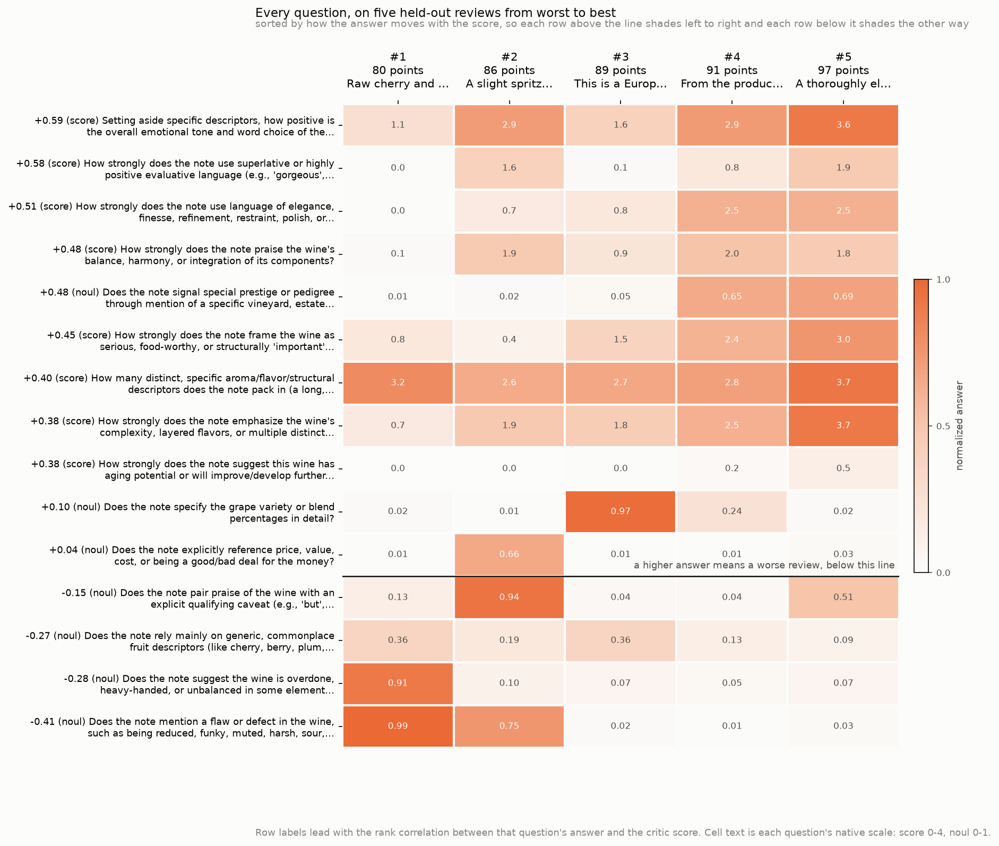
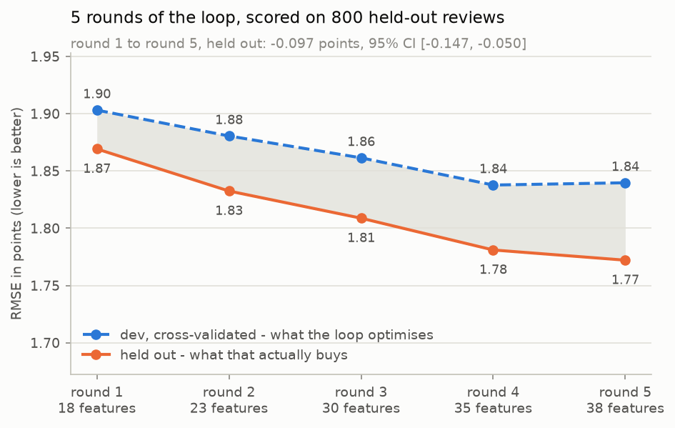

Autoresearch 功能发现
运行一个 autoresearch 循环：提出 TypeSafe 问题，将自由文本转换为数值特征，并利用模型误差改进一个有监督的 CatBoost 回归器。
TypeSafe 问题把自由文本转换为有监督 CatBoost 模型所需的数值特征； 使用 autoresearch 循环来发现这些问题。
CatBoost 需要一张由数字组成的表格，而品鉴笔记并不是。本实战指南通过围绕笔记提出的问题构建出这张表格，而且其中没有一个问题是手工编写的。由 LLM 提出问题，TypeSafe 为每一行作答，CatBoost 再基于答案训练。接下来的就是 autoresearch 部分：CatBoost 报告它使用了哪些问题、哪些行它仍然会预测错，下一次提案调用读取这份报告，循环再次运行。
读到最后，你会得到一个可以指向自己带标注文本的循环、一条每轮留出误差的曲线，以及一张说明最终模型最常使用哪些问题的表格。
tasting note
|
v
38 TypeSafe answers
|-- 29 score questions x 2 columns = 58
| expected rubric level + answer uncertainty
`-- 9 noul questions x 1 column = 9
probability true
|
v
67 numeric columns --> CatBoost --> predicted critic score
held-out RMSE: 1.77 pointsscore 答案会变成两列：答案指向的平均档位，以及答案围绕该平均值的分散程度。noul 答案就是一个概率，因此它是一列。
数据是 2,000 条葡萄酒评论：输入是一条品鉴笔记，输出是评论家在 80-100 分制上的评分。RMSE 以评论家评分的分数为单位衡量预测误差，偏差越大权重越高，数值越低越好。下表中的每个数字都来自模型和循环从未见过的 800 条评论。
| 笔记如何变成一个分数 | RMSE |
|---|---|
| 预测训练行的平均分 | 3.09 |
| 同一个 CatBoost，把笔记当作词频来读 | 2.47 |
| 直接让 TypeSafe 给出分数本身，再重新缩放并平移 | 2.15 |
| 一次提案调用得到的 18 个问题，无循环 | 1.87 |
| 循环五轮后的 38 个问题 | 1.77 |
最后两行就是循环。一次提案调用，在还毫无依据可循时就达到 1.87。再经过四轮读取它自己预测得最差的结果，达到 1.77。大部分收益来自第一次调用；其后四轮又带来多少改进，下文将进一步测量。
想把这个 notebook 进一步扩展，或应用到另一个问题上？参见 后续步骤。
from __future__ import annotations
import json
import os
import random
import textwrap
import urllib.request
from concurrent.futures import ThreadPoolExecutor
from pathlib import Path
from time import perf_counter
from typing import NamedTuple
import matplotlib
import matplotlib.pyplot as plt
import numpy as np
from catboost import CatBoostRegressor
from cooksafe import JsonCache, make_playground_link
from IPython.display import Markdown, display
from typesafe_sdk import Noul, NoulCriteria, Score, TypeSafeClient
matplotlib.use("Agg") # headless render
TYPESAFE_MODEL = "jev-1.12"
FOLDS, REPEATS = 5, 3 # repeats steady the error at this sample size
CATBOOST = dict(
iterations=400,
depth=4,
learning_rate=0.05,
loss_function="RMSE",
verbose=0,
random_seed=0,
thread_count=1,
allow_writing_files=False,
)
client = TypeSafeClient(
# keyless kernels replay the cache
api_key=os.environ.get("TYPESAFE_API_KEY", "cache-only"),
base_url=os.environ.get("TYPESAFE_ENDPOINT"),
timeout=120.0,
)
json_cache = JsonCache(Path("json_cache.json"))
# ----------------------------------------------------------------- the specification
INTENSITY_LEVELS = [
"Not present in this note at all",
"Barely present - mentioned once, in passing",
"Present at a moderate level",
"Present strongly - the note dwells on it",
"Dominant - the note is largely about this",
]
PRESENCE_CRITERIA = NoulCriteria(
true="The note states this or clearly implies it",
false="The note gives no indication of this",
)
# Asking for the score outright: ten quality bands, rescaled onto the 80-100 critic scale.
SCORE_LEVELS = [
"Faulty or unpleasant - the note is mostly criticism",
"Barely acceptable - drinkable, with nothing to recommend it",
"Simple and sound - correct, plain, forgettable",
"Pleasant everyday wine - some appeal, little depth",
"Good - clear varietal character, well made",
"Very good - balanced, with something to say",
"Excellent - complex and structured",
"Outstanding - depth and length, built to age",
"Superb - among the best of its type",
"Profound - the note treats it as exceptional",
]
# Structured output requires every property in `required`, so unused fields come back empty.
PROPOSAL_SCHEMA = {
"type": "object",
"properties": {
"actions": {
"type": "array",
"items": {
"type": "object",
"properties": {
"op": {"type": "string", "enum": ["add", "revise", "drop"]},
"target": {"type": "string"},
"name": {"type": "string"},
"kind": {"type": "string", "enum": ["intensity", "presence"]},
"question": {"type": "string"},
},
"required": ["op", "target", "name", "kind", "question"],
"additionalProperties": False,
},
}
},
"required": ["actions"],
"additionalProperties": False,
}
PROPOSALS = 18 # actions the proposer may return per round
# The one string that knows this is about wine. Point it at your own label and text.
PROPOSER_TASK = f"""You are designing numeric features for a gradient-boosting model that
predicts the score a wine critic gave (an integer from 80 to 100) from the tasting note alone.
The model sees nothing but the features you design.
Return up to {PROPOSALS} actions. Each action is one of:
- {{"op": "add", "target": "", "name": ..., "kind": ..., "question": ...}}
A new feature.
- {{"op": "revise", "target": <name of an existing feature>, "name": ..., "kind": ...,
"question": ...}}
Replace that feature's question with better wording. Use this when a feature measures the
right thing badly: too narrow, too vague, or worded so nearly every note answers the same.
- {{"op": "drop", "target": <name of an existing feature>, "name": "", "kind": "intensity",
"question": ""}}
Remove a feature that is not earning its place.
`kind` is "intensity" for something with a degree, or "presence" for a yes/no fact.
`question` is what gets asked about one tasting note.
An "intensity" question is graded against this fixed five-level rubric, so word it so that the
levels make sense:
{chr(10).join(f" {i}. {level}" for i, level in enumerate(INTENSITY_LEVELS))}
A "presence" question is answered as the probability that it is true of the note.
Good features can be judged from the note's own words, vary from note to note, and carry
information about quality that the other features do not. Reviewers describe structure, fruit,
oak, length, complexity, and drinkability, and they also signal quality through word choice."""
class Split(NamedTuple):
"""The rows, their labels, and which half the loop is allowed to read."""
notes: list[str]
scores: np.ndarray
dev: np.ndarray
test: np.ndarray
# ----------------------------------------------------------------- the data
WINEMAG_CSV = (
"https://huggingface.co/datasets/GroNLP/ik-nlp-22_winemag/resolve/"
"90eb39f35fc64e556fc17f06d4137a4a69ec3297/train.csv"
)
@json_cache
def load_slice(n_dev: int, n_test: int, seed: int) -> dict:
"""Fetch the pinned CSV and take a seeded sample of note + score, one row per note."""
import csv
import io
request = urllib.request.Request(
WINEMAG_CSV, headers={"User-Agent": "typesafe-cookbook/1.0"}
)
with urllib.request.urlopen(request, timeout=300) as response:
text = response.read().decode()
rows, seen = [], set()
for row in csv.DictReader(io.StringIO(text)): # a few notes repeat verbatim
if not row["description"] or not row["points"] or row["description"] in seen:
continue
seen.add(row["description"])
rows.append((row["description"], float(row["points"])))
random.Random(seed).shuffle(rows)
picked = rows[: n_dev + n_test]
return {"notes": [r[0] for r in picked], "points": [r[1] for r in picked]}
def example_rows(split: Split, out_of_fold: np.ndarray | None, n: int) -> list[int]:
"""Select representative dev rows for a proposer round."""
dev = split.dev
if out_of_fold is None:
ranked = dev[np.argsort(split.scores[dev], kind="stable")]
return [int(ranked[round(q * (len(ranked) - 1))]) for q in np.linspace(0, 1, n)]
error = np.abs(split.scores[dev] - out_of_fold)
order = np.argsort(-error, kind="stable")
worst = [int(dev[i]) for i in order[: n // 2]]
best = [int(dev[i]) for i in order[len(order) - (n - n // 2) :]]
return worst + best
def example_block(
rows: list[int],
split: Split,
out_of_fold: np.ndarray | None,
previous: np.ndarray | None = None,
) -> str:
"""Format selected rows for the proposer."""
if out_of_fold is None:
head = "Example notes, with the score each one was given:"
body = [f"- scored {split.scores[r]:.0f}: {split.notes[r]}" for r in rows]
return head + "\n" + "\n".join(body)
head = (
"Dev notes, worst-predicted first. The first half is where your current questions "
"miss by the most and the second half is where they are already right, so what "
"separates the halves is what the questions have not captured."
)
if previous is not None:
head += (
" Each line also carries what the previous round predicted, so you can see which "
"notes your last batch of questions moved."
)
body = []
for r in rows:
line = f"- scored {split.scores[r]:.0f}, predicted {out_of_fold[r]:.1f}"
if previous is not None:
line += f" (last round {previous[r]:.1f})"
body.append(f"{line}: {split.notes[r]}")
return head + "\n" + "\n".join(body)
def load_split(n_dev: int, n_test: int, seed: int = 0) -> Split:
# keyword, because the cache key is the function name plus how each argument was spelled
data = load_slice(n_dev, n_test, seed=seed)
return Split(
notes=data["notes"],
scores=np.array(data["points"]),
dev=np.arange(n_dev),
test=np.arange(n_dev, n_dev + n_test),
)
# ----------------------------------------------------------------- step 1: propose
def proposal_prompt(examples: str, feedback: str, accepted: list[dict]) -> str:
parts = [PROPOSER_TASK, "\n" + examples]
if accepted:
parts.append(
"\nThe features you have now. `add` must not duplicate one of these; `revise` and "
"`drop` refer to one by name:\n"
+ "\n".join(
f"- {f['name']} ({f['kind']}): {f['question']}" for f in accepted
)
)
if feedback:
parts.append("\nHow the model did with those features:\n" + feedback)
return "\n".join(parts)
@json_cache
def propose(model: str, round_index: int, prompt: str) -> dict:
"""One proposal call. Every number in `prompt` is rounded so a replay hits the cache."""
if model.startswith("claude"):
import anthropic
response = anthropic.Anthropic(
api_key=os.environ.get("ANTHROPIC_API_KEY", "cache-only")
).messages.create(
model=model,
max_tokens=16000,
output_config={
"effort": "medium",
"format": {"type": "json_schema", "schema": PROPOSAL_SCHEMA},
},
messages=[{"role": "user", "content": prompt}],
)
body = next(block.text for block in response.content if block.type == "text")
usage = [response.usage.input_tokens or 0, response.usage.output_tokens or 0]
else:
from openai import OpenAI
response = OpenAI(
api_key=os.environ.get("OPENAI_API_KEY", "cache-only")
).chat.completions.create(
model=model,
reasoning_effort="high",
max_completion_tokens=16000,
response_format={"type": "json_object"},
messages=[
{
"role": "user",
"content": prompt
+ "\n\nReply with JSON matching this schema:\n"
+ json.dumps(PROPOSAL_SCHEMA),
}
],
)
body = response.choices[0].message.content
usage = [response.usage.prompt_tokens, response.usage.completion_tokens]
return {"actions": json.loads(body)["actions"][:PROPOSALS], "usage": usage}
def slug(name: str, taken: set[str]) -> str:
"""Names become question ids and column labels, so keep them plain and unique."""
base = (
"".join(c if c.isalnum() else "_" for c in name.lower()).strip("_") or "feature"
)
candidate, n = base, 2
while candidate in taken:
candidate, n = f"{base}_{n}", n + 1
return candidate
def to_candidates(actions: list[dict], accepted: list[dict], round_index: int) -> tuple:
"""Split a round's actions into screenable candidates and a list of names to drop."""
live = {f["name"] for f in accepted}
drops = [a["target"] for a in actions if a["op"] == "drop" and a["target"] in live]
replacing = {
a["target"] for a in actions if a["op"] == "revise" and a["target"] in live
}
# a revision may keep the name it replaces, since that feature is on its way out
taken, candidates = live - replacing, []
for action in actions:
if action["op"] == "drop":
continue
if action["op"] == "revise" and action["target"] not in live:
continue # a revision of something that is not there
name = slug(action["name"], taken)
taken.add(name)
candidates.append(
{
"id": f"{name}@{round_index}", # unique, so earlier rounds keep their columns
"name": name,
"kind": action["kind"],
"question": action["question"],
"replaces": action["target"] if action["op"] == "revise" else "",
}
)
return candidates, drops
# ----------------------------------------------------------------- step 2: answer
def feature_questions(features: list[dict]) -> dict:
questions = {}
for feature in features:
if feature["kind"] == "intensity":
questions[feature["name"]] = Score(
instructions=feature["question"], criteria=INTENSITY_LEVELS
)
else:
questions[feature["name"]] = Noul(
instructions=feature["question"], criteria=PRESENCE_CRITERIA
)
return questions
@json_cache
def answer(model: str, note: str, features_json: str) -> dict:
"""One request per note; every question of the round rides it. Keeps every probability."""
features = json.loads(features_json)
started = perf_counter()
response = client.system_one(
state=note, questions=feature_questions(features), model=model
)
raw = {}
for feature in features:
got = response.answers[feature["name"]]
if feature["kind"] == "intensity":
raw[feature["name"]] = [
got.probabilities.get(i, 0.0) for i in range(len(INTENSITY_LEVELS))
]
else:
raw[feature["name"]] = [got.noul]
return {
"raw": raw,
"seconds": round(perf_counter() - started, 2),
"input_tokens": response.usage.input_tokens or 0,
"output_tokens": response.usage.output_tokens or 0,
}
def featurize(notes: list[str], features: list[dict]) -> dict:
"""Answer one question set for many notes: one request each, eight in flight."""
payload = json.dumps(features, sort_keys=True)
with ThreadPoolExecutor(max_workers=8) as pool:
results = list(
pool.map(lambda note: answer(TYPESAFE_MODEL, note, payload), notes)
)
return {
f["name"]: np.array([r["raw"][f["name"]] for r in results], dtype=float)
for f in features
}
def encode(feature: dict, probabilities: np.ndarray, mode: str) -> list[tuple]:
"""Turn one question's probabilities into named columns."""
name = feature["name"]
if feature["kind"] == "presence":
return [(name, probabilities[:, 0])] # one number is all there is
levels = np.arange(probabilities.shape[1])
mean = probabilities @ levels
if mode == "mean":
return [(name, mean)]
if mode == "mean_spread":
variance = probabilities @ (levels**2) - mean**2
return [(name, mean), (f"{name}_sd", np.sqrt(np.clip(variance, 0, None)))]
return [(f"{name}_p{i}", probabilities[:, i]) for i in levels]
def design(features: list[dict], answers_for: dict, mode: str) -> tuple:
"""Stack every feature's columns into one matrix, plus a label per column."""
columns, labels = [], []
for feature in features:
for label, column in encode(feature, answers_for[feature["id"]], mode):
columns.append(column)
labels.append(label)
return np.column_stack(columns), labels
def plain(features: list[dict]) -> list[dict]:
"""What goes on the wire and into the cache key: no id, no bookkeeping."""
return [
{"name": f["name"], "kind": f["kind"], "question": f["question"]}
for f in features
]
# ----------------------------------------------------------------- step 3: fit
def rmse(y: np.ndarray, p: np.ndarray) -> float:
return float(np.sqrt(np.mean((y - p) ** 2)))
def spearman(a: np.ndarray, b: np.ndarray) -> float:
"""Rank correlation: does the model order the wines the way the critic did?"""
ranks = (
np.argsort(np.argsort(a)).astype(float),
np.argsort(np.argsort(b)).astype(float),
)
return float(np.corrcoef(*ranks)[0, 1])
def folds(y: np.ndarray, k: int, seed: int) -> list[np.ndarray]:
"""Label-stratified k-fold: sort by the label with a seeded tiebreak, then deal off the top."""
rng = np.random.default_rng(seed)
order = np.lexsort((rng.random(len(y)), y))
return [np.sort(order[i::k]) for i in range(k)]
def cross_validate(X: np.ndarray, y: np.ndarray) -> tuple[np.ndarray, float]:
out_of_fold = np.zeros((REPEATS, len(y)))
for repeat in range(REPEATS):
for fold in folds(y, FOLDS, seed=repeat):
train = np.setdiff1d(np.arange(len(y)), fold)
model = CatBoostRegressor(**CATBOOST).fit(X[train], y[train])
out_of_fold[repeat, fold] = model.predict(X[fold])
scores = [rmse(y, out_of_fold[repeat]) for repeat in range(REPEATS)]
return out_of_fold.mean(axis=0), float(np.mean(scores))
def importances(X: np.ndarray, y: np.ndarray) -> np.ndarray:
return CatBoostRegressor(**CATBOOST).fit(X, y).get_feature_importance()
def paired_gain(y: np.ndarray, before: np.ndarray, after: np.ndarray) -> tuple:
"""Bootstrap the paired held-out RMSE change."""
squared = ((y - before) ** 2, (y - after) ** 2)
rng = np.random.default_rng(0)
drawn = []
for _ in range(2000):
rows = rng.integers(0, len(y), len(y))
drawn.append(
np.sqrt(squared[1][rows].mean()) - np.sqrt(squared[0][rows].mean())
)
drawn = np.array(drawn)
return (
rmse(y, after) - rmse(y, before),
float(np.percentile(drawn, 2.5)),
float(np.percentile(drawn, 97.5)),
)
def fit_predict(X: np.ndarray, split: Split) -> np.ndarray:
model = CatBoostRegressor(**CATBOOST).fit(X[split.dev], split.scores[split.dev])
return model.predict(X[split.test])
def fit_predict_text(split: Split) -> np.ndarray:
"""The reference arm: the same model, handed the note instead of the columns."""
from catboost import Pool
raw = np.array([[note] for note in split.notes], dtype=object)
model = CatBoostRegressor(**CATBOOST).fit(
Pool(raw[split.dev], split.scores[split.dev], text_features=[0])
)
return model.predict(Pool(raw[split.test], text_features=[0]))
def evaluate(
features: list[dict], answers_for: dict, split: Split, mode: str
) -> tuple[np.ndarray, float]:
"""Cross-validated error on the dev rows for one candidate question set."""
X, _ = design(features, answers_for, mode)
return cross_validate(X[split.dev], split.scores[split.dev])
def swap_in(accepted: list[dict], feature: dict) -> list[dict] | None:
"""The accepted set with `feature` in place of the one it revises, or None if it is gone."""
at = next(
(i for i, f in enumerate(accepted) if f["name"] == feature["replaces"]), None
)
if at is None:
return None
trial = list(accepted)
trial[at] = {k: feature[k] for k in ("id", "name", "kind", "question")}
return trial
def try_change(
trial: list[dict],
accepted: list[dict],
cv: float,
answers_for: dict,
split: Split,
mode: str,
tolerance: float,
) -> tuple[list[dict], float, str, bool]:
"""Refit with the change and keep it only if the dev error improves. No API calls."""
_, cv_trial = evaluate(trial, answers_for, split, mode)
if cv_trial <= cv + tolerance:
return trial, cv_trial, f"CV {cv:.3f} -> {cv_trial:.3f}", True
return accepted, cv, f"would cost {cv_trial - cv:+.3f}", False
def owner_of(label: str, features: list[dict]) -> dict:
"""Which feature a column label belongs to - encodings suffix the name."""
exact = next((f for f in features if f["name"] == label), None)
if exact:
return exact
return next(f for f in features if label.startswith(f["name"] + "_"))
def importance_per_feature(
features: list[dict], labels: list[str], column_importances: np.ndarray
) -> dict:
"""Sum each question's CatBoost column importances.
Intensity questions can produce multiple model columns. Combining their normalized
importances gives one percentage share per question.
"""
total = {f["name"]: 0.0 for f in features}
for label, column_importance in zip(labels, column_importances):
total[owner_of(label, features)["name"]] += float(column_importance)
return total
def feedback_for(
history: list[float],
accepted: list[dict],
answers_for: dict,
split: Split,
mode: str,
out_of_fold: np.ndarray,
previous: np.ndarray | None,
) -> str:
"""The scoreboard the next proposal call reads. The notes themselves arrive separately,
through `example_block`. Numbers are rounded before they enter the prompt."""
X, labels = design(accepted, answers_for, mode)
dev, scores = split.dev, split.scores
by_name = importance_per_feature(accepted, labels, importances(X[dev], scores[dev]))
lines = ["Cross-validated RMSE in points so far, lower is better:"]
lines += [f" round {i + 1}: {v:.2f}" for i, v in enumerate(history)]
if previous is not None:
now, before = np.abs(scores[dev] - out_of_fold), np.abs(scores[dev] - previous)
better, worse = int((now < before - 0.1).sum()), int((now > before + 0.1).sum())
lines.append(
f"\nAgainst the previous round, {better} of the {len(dev)} dev notes are now "
f"predicted better by more than 0.1 points and {worse} are predicted worse."
)
lines.append(
"\nYour features, with importance as a percentage of the total and the spread of the "
"column across the dev rows. Low importance or low spread means the question is not "
"doing much; revise or drop it."
)
for feature in sorted(accepted, key=lambda f: -by_name.get(f["name"], 0.0)):
column = encode(feature, answers_for[feature["id"]], mode)[0][1]
lines.append(
f" {feature['name']} ({feature['kind']}): "
f"{by_name.get(feature['name'], 0.0):.1f}% importance, "
f"spread {column[dev].std():.2f}"
)
return "\n".join(lines)
# ----------------------------------------------------------------- the loop itself
class Discovery(NamedTuple):
"""Artifacts returned by the discovery loop."""
accepted: list[dict] # the question set it ended with
answers_for: dict # feature id -> (rows x levels) probabilities
snapshots: list[list[dict]] # the set as it stood at the end of each round
history: list[float] # dev CV error after each round
batches: list[tuple] # what each round sent, for the request table
journal: list[tuple] # every action and what became of it
def run_loop(
split: Split,
proposer: str,
rounds: int,
examples: int,
mode: str,
min_spread: float,
tolerance: float,
) -> Discovery:
"""Run the propose, answer, fit, and feedback loop."""
shown = example_rows(split, None, examples) # round 1 has nothing predicted yet
out_of_fold = previous = None
got_from = Discovery([], {}, [], [], [], [])
accepted, answers_for = got_from.accepted, got_from.answers_for
snapshots, history = got_from.snapshots, got_from.history
batches, journal = got_from.batches, got_from.journal
feedback = ""
for round_index in range(1, rounds + 1):
block = example_block(shown, split, out_of_fold, previous)
actions = propose(
proposer, round_index, proposal_prompt(block, feedback, accepted)
)["actions"]
keep, drops = to_candidates(actions, accepted, round_index)
if keep: # one request per row, carrying every question this round proposed
batches.append((round_index, plain(keep)))
answers = featurize(split.notes, plain(keep))
for feature in keep:
answers_for[feature["id"]] = answers[feature["name"]]
for (
feature
) in keep: # an add goes in; importance says later whether it earned it
if feature["replaces"]:
continue
column = encode(feature, answers_for[feature["id"]], mode)[0][1]
flat = float(column[split.dev].std()) < min_spread
journal.append(
(round_index, "flat" if flat else "add", feature["name"], "")
)
if not flat:
accepted.append(
{k: feature[k] for k in ("id", "name", "kind", "question")}
)
_, cv = evaluate(accepted, answers_for, split, mode)
trial_args = (answers_for, split, mode, tolerance)
for feature in [f for f in keep if f["replaces"]]: # every revision is tried
trial = swap_in(accepted, feature)
if trial is None: # it revises something an earlier round already dropped
journal.append(
(round_index, "stale", feature["name"], "target is gone")
)
continue
accepted[:], cv, note, took = try_change(trial, accepted, cv, *trial_args)
what = "revise" if took else "reject"
journal.append(
(
round_index,
what,
feature["name"],
f"was {feature['replaces']}, {note}",
)
)
for name in drops: # and so is every drop
trial = [f for f in accepted if f["name"] != name]
if not trial:
continue
accepted[:], cv, note, took = try_change(trial, accepted, cv, *trial_args)
journal.append((round_index, "drop" if took else "keep", name, note))
previous, (out_of_fold, cv) = (
out_of_fold,
evaluate(accepted, answers_for, split, mode),
)
history.append(cv)
snapshots.append(list(accepted))
feedback = feedback_for(
history, accepted, answers_for, split, mode, out_of_fold, previous
)
# next round reads the rows these questions get most wrong, and as many they get right
shown = example_rows(split, out_of_fold, examples)
report(round_index, keep, drops, journal, accepted, cv)
return got_from
def report(
round_index: int,
keep: list[dict],
drops: list[str],
journal: list[tuple],
accepted: list[dict],
cv: float,
) -> None:
"""One block per round: the counts, the names it added, then everything with a number."""
revised = sum(1 for f in keep if f["replaces"])
print(
f"round {round_index}: {len(keep) - revised} add, {revised} revise, "
f"{len(drops)} drop"
)
this_round = [j for j in journal if j[0] == round_index]
added = [name for _, what, name, _ in this_round if what == "add"]
if added:
print(
textwrap.fill(
", ".join(added),
88,
initial_indent=" added ",
subsequent_indent=" " * 10,
)
)
for _, what, name, note in this_round: # everything carrying a number of its own
if what != "add":
print(f" {what:<7}{name:<34}{note}")
print(f" -> {len(accepted)} features, dev CV RMSE {cv:.3f}\n")
# ----------------------------------------------------------------- asking for the score
@json_cache
def ask_score(model: str, note: str) -> dict:
"""One `Score` over ten quality bands, read as a level and rescaled to 80-100."""
response = client.system_one(
state=note,
questions={
"quality": Score(
instructions=(
"Judging only by what this tasting note says, how good is the wine?"
),
criteria=SCORE_LEVELS,
)
},
model=model,
)
got = response.answers["quality"]
top = len(SCORE_LEVELS) - 1
expected = sum(k * v for k, v in got.probabilities.items())
return {
# level 0 is the bottom of the critic's scale, level 9 the top
"expected": 80.0 + 20.0 * expected / top,
"picked": 80.0 + 20.0 * got.score / top,
"input_tokens": response.usage.input_tokens or 0,
"output_tokens": response.usage.output_tokens or 0,
}
# ----------------------------------------------------------------- charts
SURFACE, INK, INK2, MUTED = "#fcfcfb", "#0b0b0b", "#52514e", "#898781"
GRID, AXIS, BLUE, ORANGE = "#e1e0d9", "#c3c2b7", "#2a78d6", "#eb6834"
def style(ax) -> None:
ax.set_facecolor(SURFACE)
for side in ("top", "right"):
ax.spines[side].set_visible(False)
for side in ("left", "bottom"):
ax.spines[side].set_color(AXIS)
ax.tick_params(colors=MUTED, labelcolor=INK2, labelsize=9)
ax.set_axisbelow(True)
def polarity(feature: dict, answers_for: dict, split: Split) -> float:
"""Rank correlation between a question's answer and the critic score, on the dev rows.
Positive means a higher answer goes with a better review, negative the opposite. It is
what orders the rows of the feature map, so the map reads as a gradient that flips.
"""
column = encode(feature, answers_for[feature["id"]], "mean")[0][1]
return spearman(column[split.dev], split.scores[split.dev])
def reviews_heatmap(
plt,
questions: list[dict],
answers_for: dict,
split: Split,
rows: tuple,
):
"""Compare held-out reviews across the discovered questions, best-signal first.
Rows arrive sorted from the questions that rise with the score to the ones that fall with
it, so a row above the divider shades left to right and a row below it shades right to
left.
"""
def value_of(feature: dict, row: int) -> float:
return float(encode(feature, answers_for[feature["id"]], "mean")[0][1][row])
signs = [polarity(question, answers_for, split) for question in questions]
flip = next((i for i, s in enumerate(signs) if s < 0), len(questions))
raw = np.array(
[[value_of(question, row) for row in rows] for question in questions]
)
normalized = np.array(
[
values / (4 if question["kind"] == "intensity" else 1)
for question, values in zip(questions, raw)
]
)
cmap = matplotlib.colors.LinearSegmentedColormap.from_list(
"typesafe_heat", [SURFACE, "#f7c7ad", ORANGE]
)
fig, ax = plt.subplots(
figsize=(9.5, 1.8 + 0.58 * len(questions)), facecolor=SURFACE
)
image = ax.imshow(normalized, aspect="auto", cmap=cmap, vmin=0, vmax=1)
row_labels = []
for question, sign in zip(questions, signs):
kind = "score" if question["kind"] == "intensity" else "noul"
prefix = f"{sign:+.2f} ({kind}) "
lines = textwrap.wrap(
" ".join(question["question"].split()),
width=52,
max_lines=2,
placeholder="...",
break_long_words=False,
break_on_hyphens=False,
)
row_labels.append(prefix + (f"\n{' ' * len(prefix)}").join(lines))
column_labels = [
f"#{i}\n{split.scores[row]:.0f} points\n{' '.join(split.notes[row].split())[:15]}..."
for i, row in enumerate(rows, 1)
]
ax.set_yticks(np.arange(len(questions)), row_labels)
ax.set_xticks(np.arange(len(rows)), column_labels)
ax.tick_params(
axis="x", top=True, labeltop=True, bottom=False, labelbottom=False, pad=8
)
ax.tick_params(axis="y", labelsize=8.5)
for side in ax.spines.values():
side.set_visible(False)
ax.set_xticks(np.arange(-0.5, len(rows), 1), minor=True)
ax.set_yticks(np.arange(-0.5, len(questions), 1), minor=True)
ax.grid(which="minor", color=SURFACE, linewidth=2)
ax.tick_params(which="minor", bottom=False, left=False)
for i, question in enumerate(questions):
for j, value in enumerate(raw[i]):
label = (
f"{value:.1f}" if question["kind"] == "intensity" else f"{value:.2f}"
)
color = SURFACE if normalized[i, j] > 0.58 else INK2
ax.text(j, i, label, ha="center", va="center", color=color, fontsize=8)
# the line where the questions stop rising with the score and start falling with it
if 0 < flip < len(questions):
ax.axhline(flip - 0.5, color=INK, linewidth=1.2)
ax.annotate(
"a higher answer means a worse review, below this line",
(len(rows) - 0.5, flip - 0.5),
xytext=(-4, 5),
textcoords="offset points",
va="bottom",
ha="right",
color=INK2,
fontsize=8.5,
)
colorbar = fig.colorbar(image, ax=ax, fraction=0.025, pad=0.025)
colorbar.set_ticks([0, 0.5, 1])
colorbar.set_label("normalized answer", color=INK2, fontsize=8.5)
colorbar.ax.tick_params(labelsize=8, colors=INK2)
fig.suptitle(
"Every question, on five held-out reviews from worst to best",
x=0.01,
y=0.995,
ha="left",
color=INK,
fontsize=11,
)
fig.text(
0.01,
0.972,
"sorted by how the answer moves with the score, so each row above the line shades "
"left to right and each row below it shades the other way",
color=MUTED,
fontsize=9,
)
fig.text(
0.01,
0.005,
"Row labels lead with the rank correlation between that question's answer and the "
"critic score. Cell text is each question's native scale: score 0-4, noul 0-1.",
color=MUTED,
fontsize=8.5,
)
return fig
def rounds_chart(
plt, curve: list[tuple], history: list[float], n_test: int, gain: tuple
):
"""Dev error and held-out error per round. The trend is the point, not the gap."""
rounds = list(range(1, len(curve) + 1))
values = [v for _, v in curve]
fig, ax = plt.subplots(figsize=(7, 3.9), facecolor=SURFACE)
style(ax)
ax.grid(axis="y", color=GRID, linewidth=0.8)
# each dev fold trains on four fifths of the rows, so the dev line sits the higher of the two
ax.fill_between(rounds, history, values, color=GRID, alpha=0.75, linewidth=0)
ax.plot(
rounds,
history,
marker="o",
color=BLUE,
linewidth=2,
linestyle="--",
label="dev, cross-validated - what the loop optimises",
)
ax.plot(
rounds,
values,
marker="o",
color=ORANGE,
linewidth=2,
label="held out - what that actually buys",
)
# label each point on the outside of the pair, so neither line crowds its own numbers
for x, dev_value, test_value in zip(rounds, history, values):
for value, other in ((dev_value, test_value), (test_value, dev_value)):
ax.annotate(
f"{value:.2f}",
(x, value),
textcoords="offset points",
xytext=(0, 8 if value >= other else -16),
ha="center",
color=INK2,
fontsize=8.5,
)
ax.set_xticks(
rounds, [f"round {x}\n{n} features" for x, (n, _) in zip(rounds, curve)]
)
ax.set_ylabel("RMSE in points (lower is better)", color=INK2, fontsize=9)
# tight around the two lines: the whole finding lives inside 0.15 of a point
low, high = min(values + history), max(values + history)
ax.set_ylim(low - 0.10, high + 0.05)
difference, low_ci, high_ci = gain
ax.set_title(
f"{len(rounds)} rounds of the loop, scored on {n_test} held-out reviews",
loc="left",
color=INK,
fontsize=11,
pad=20,
)
# the number the chart is really about: is the held-out move bigger than the noise?
ax.text(
0,
1.015,
f"round 1 to round {len(rounds)}, held out: {difference:+.3f} points, "
f"95% CI [{low_ci:+.3f}, {high_ci:+.3f}]",
transform=ax.transAxes,
color=MUTED,
fontsize=9,
)
ax.legend(frameon=False, labelcolor=INK2, fontsize=9, loc="lower left")
return fig环境准备
pip install anthropic openai catboost numpy matplotlib ipython 'cooksafe>=0.2.0,<0.3.0'然后设置 TYPESAFE_API_KEY 和 ANTHROPIC_API_KEY。每次 API 调用都会缓存到 json_cache.json，该文件随本实战指南一起提供，因此重新渲染时会直接重放这些数字， 而不会发起任何调用。删除它即可实时重新运行。这些数字来自 2026-08-03 的 TypeSafe jev-1.12 和 claude-sonnet-5。propose() 有一个针对 gpt-5.6-luna 的分支，但未运行过。
第一个代码单元就是全部实现：API 调用、编码、指标、图表样式。它在这里是为了让本文件能够独立运行，文档站点会将其折叠起来。初读时可以跳过它——真正的操作指南从它下面开始。
N_DEV, N_TEST = 1200, 800 # the loop reads dev labels only; test is scored once
ROUNDS = 5 # a round answers questions for all 2,000 rows: 2,000 requests
PROPOSER = "claude-sonnet-5" # or "gpt-5.6-luna"; the cache holds the Anthropic run
EXAMPLES = 60 # dev notes the proposer reads per round, half of them its worst misses
MIN_SPREAD = 0.05 # a column this flat cannot separate anything, so it is not kept
CHANGE_TOLERANCE = 0.0 # a revision or drop has to improve dev error, not just not hurt
ENCODING = "mean_spread" # a score answer becomes two columns: its mean and spread
split = load_split(N_DEV, N_TEST, seed=0)
NOTES, SCORES, DEV, TEST = split.notes, split.scores, split.dev, split.test
print(
f"{len(DEV)} dev rows, {len(TEST)} held out; scores run "
f"{SCORES.min():.0f}-{SCORES.max():.0f}, mean {SCORES.mean():.2f}, sd {SCORES.std():.2f}"
)
print(f"\none of the notes:\n{NOTES[0]}")1200 dev rows, 800 held out; scores run 80-98, mean 88.73, sd 3.17
one of the notes:
A Champagne that is very much wine. The structure and the richness are just right for a food wine, showing ripe acidity, flavors of plums and apricots, and balancing these primary fruits with a dense, complex structure that takes in yeast, maturity and a tight apple skin finish.循环反复读取 2,000 行中的同 1,200 行（即 dev 行），当某个问题有助于预测这 1,200 个分数时便将其保留。如果用相同的行来评分，主要衡量的只是循环对这些行自身拟合得有多好，因此另外 800 行被留出，只在最后评分一次。
两种问题类型
提出的问题属于两种之一，是哪一种决定了返回的是什么数字。
intensity变成一个Score，适用于任何有程度之分的东西。它的五个 档位印在下方，列取的是平均档位，因此一条介于 "moderate" 和 "strongly" 之间的 笔记会落在两者之间。presence变成一个Noul，用于"是/否"事实，比如是否提到了某个缺陷。 列就是那一个概率。
方法
questions <- {}
repeat for each round:
notes <- round 1 ? 60 dev notes across the score range
: the 30 worst-predicted dev notes + the 30 best,
each with its score, this prediction and the last
actions <- LLM(brief, questions, notes, importance and error so far)
answers[q] <- TypeSafe(note, all new questions of this round) for every row
for each added q: keep it unless its column is flat
for each revised q: refit; keep the change only if dev error drops
for each dropped q: refit; drop it only if dev error drops
out_of_fold <- k-fold CatBoost on the columns # judges, and picks next round's notes没有任何问题会在被回答之前被过滤掉。一轮的所有问题都在同一个请求中发出，所以多加一个问题不产生额外请求。一个只适用于十分之一行的问题，在提案者读取的 60 条笔记中看似无用，却仍可能是整个集合中最有用的一列。
k-fold 指把 dev 行分成 k 份，用其余部分训练的模型来预测每一份。这些预测承担三项工作：评判每一次修订和删除，挑选下一轮读取的笔记，并通过这些问题自上一轮以来移动了多远，告诉提案者它的哪些问题起了作用。
print("every intensity question is graded on these five levels:\n")
for i, level in enumerate(INTENSITY_LEVELS):
print(f" {i}. {level}")
print("\nevery presence question is judged true or false against these:\n")
print(f" true: {PRESENCE_CRITERIA['true']}")
print(f" false: {PRESENCE_CRITERIA['false']}")
print("\nthe brief the proposer works from:\n")
print("\n".join(PROPOSER_TASK.splitlines()[:6]) + "\n ...")every intensity question is graded on these five levels:
0. Not present in this note at all
1. Barely present - mentioned once, in passing
2. Present at a moderate level
3. Present strongly - the note dwells on it
4. Dominant - the note is largely about this
every presence question is judged true or false against these:
true: The note states this or clearly implies it
false: The note gives no indication of this
the brief the proposer works from:
You are designing numeric features for a gradient-boosting model that
predicts the score a wine critic gave (an integer from 80 to 100) from the tasting note alone.
The model sees nothing but the features you design.
Return up to 18 actions. Each action is one of:
...Autoresearch 循环
run_loop 运行全部五轮，并每轮打印一个区块。新增的问题直接进入：它的答案已经取回，它的重要性稍后会显示它是否值得提出。修订或删除会移走模型正在使用的一列，所以每一种都要先尝试：用更改重新拟合，只有当 dev 误差下降时才保留。重新拟合不产生任何 API 调用，所以尝试一项更改再否决它是免费的。
run = run_loop(
split, PROPOSER, ROUNDS, EXAMPLES, ENCODING, MIN_SPREAD, CHANGE_TOLERANCE
)
accepted, answers_for = run.accepted, run.answers_for
snapshots, history = run.snapshots, run.historyround 1: 18 add, 0 revise, 0 drop
added complexity, fruit_intensity, tannin_structure, acidity_intensity,
oak_intensity, finish_length, balance_harmony, aging_potential,
positive_superlative_language, negative_critical_language,
drinkability_easiness, body_richness, sweetness_level, texture_descriptors,
earthy_savory_notes, flaw_or_defect_mentioned,
single_vineyard_or_prestige_signal, varietal_blend_detail
-> 18 features, dev CV RMSE 1.903
round 2: 5 add, 3 revise, 3 drop
added power_concentration_language, flavor_distinctiveness, generic_fruit_language,
candied_artificial_flavor, rustic_authentic_character
reject oak_dominance was oak_intensity, would cost +0.005
revise negative_critical_language was negative_critical_language, CV 1.897 -> 1.894
revise single_vineyard_or_prestige_signalwas single_vineyard_or_prestige_signal, CV 1.894 -> 1.881
keep finish_length would cost +0.009
keep texture_descriptors would cost +0.001
keep varietal_blend_detail would cost +0.023
-> 23 features, dev CV RMSE 1.881
round 3: 7 add, 2 revise, 1 drop
added elegance_finesse_language, minerality_precision_language,
hedged_qualified_praise, underripe_green_character,
reviewer_overall_verdict_strength, unusual_or_funky_descriptor_valence,
botrytis_or_special_winemaking_signal
revise negative_critical_language was negative_critical_language, CV 1.868 -> 1.864
revise finish_quality was finish_length, CV 1.864 -> 1.861
keep candied_artificial_flavor would cost +0.014
-> 30 features, dev CV RMSE 1.861
round 4: 5 add, 2 revise, 3 drop
added excess_or_imbalance_signal, descriptive_detail_density,
critic_enthusiasm_confidence, savory_food_wine_seriousness,
note_overall_tone_positivity
revise rustic_authentic_character was rustic_authentic_character, CV 1.843 -> 1.838
reject hedged_qualified_praise was hedged_qualified_praise, would cost +0.014
keep botrytis_or_special_winemaking_signalwould cost +0.011
keep candied_artificial_flavor would cost +0.009
keep unusual_or_funky_descriptor_valencewould cost +0.010
-> 35 features, dev CV RMSE 1.838
round 5: 4 add, 2 revise, 8 drop
added structural_seriousness, youthful_tension_signal, surface_prettiness_vs_depth,
price_value_signal
reject unconventional_character_as_virtuewas rustic_authentic_character, would cost +0.010
revise flavor_distinctiveness was flavor_distinctiveness, CV 1.849 -> 1.843
keep candied_artificial_flavor would cost +0.002
keep botrytis_or_special_winemaking_signalwould cost +0.003
keep hedged_qualified_praise would cost +0.006
keep excess_or_imbalance_signal would cost +0.005
drop underripe_green_character CV 1.843 -> 1.840
keep unusual_or_funky_descriptor_valencewould cost +0.002
keep texture_descriptors would cost +0.001
keep generic_fruit_language would cost +0.000
-> 38 features, dev CV RMSE 1.840把它指向你自己的数据
PROPOSER_TASK 是唯一提到葡萄酒的字符串，而 featurize() 接受任意字符串列表。编辑该任务简报会改变提案提示词，而提示词是缓存键的一部分，因此下一次运行时每一轮都会重新调用 API。
请求数随行数增长，而不是随问题数增长：每轮每行一个请求，所以 100,000 行就是每轮 100,000 个请求。一次修订算作一个新问题，因此它要对每一行再过一遍。请缓慢地调大工作线程池。八个就已经足以在共享密钥上触发速率限制。
问题看到的内容
五条留出评论，各自位于评分区间的一个四分位上，对照 38 个问题中的 15 个：按重要性排名的前八个 score 问题，加上前七个 noul。
这 15 行随后按答案随评论家评分变化的方向排序。答案随评分上升的问题排在前面，答案随评分下降的问题排在分隔线之后。所以从左到右、从最差评论到最好评论，分隔线之上的答案应当攀升，之下的答案应当回落。
X, labels = design(accepted, answers_for, ENCODING)
column_importances = importances(X[DEV], SCORES[DEV])
# an encoding gives a feature more than one column, so add a feature's columns back up
feature_importances = importance_per_feature(accepted, labels, column_importances)
ranked = sorted(accepted, key=lambda f: -feature_importances[f["name"]])
score_questions = [f for f in ranked if f["kind"] == "intensity"][:8]
noul_questions = [f for f in ranked if f["kind"] == "presence"][:7]
# ordered by which way the answer moves with the score, so the map flips halfway down
heatmap_questions = sorted(
score_questions + noul_questions,
key=lambda f: -polarity(f, answers_for, split),
)
ordered_test = TEST[np.argsort(SCORES[TEST], kind="stable")]
positions = np.linspace(0, len(ordered_test) - 1, 5).round().astype(int)
review_rows = tuple(ordered_test[positions])
print("the five held-out heatmap columns:\n")
for i, row in enumerate(review_rows, 1):
excerpt = " ".join(NOTES[row].split())
print(f" {i}. {SCORES[row]:.0f} points: {excerpt[:100]}...")
fig = reviews_heatmap(plt, heatmap_questions, answers_for, split, review_rows)
display(fig)
plt.close(fig)the five held-out heatmap columns:
1. 80 points: Raw cherry and plum aromas are resiny and suggest wet cement. This is shearing and so jacked up with...
2. 86 points: A slight spritz brightens the mouthfeel of this lemony wine. Aromas are a bit musky, but flavors of ...
3. 89 points: This is a European-style Syrah, cofermented with 2% Viognier. It's soft and round, medium in body, a...
4. 91 points: From the producer's dry-farmed estate vineyard, and supported by small amounts of Merlot and Caberne...
5. 97 points: A thoroughly elegant, serious and yet immensely enjoyable wine that stays lively many days after ope...
页面顶部的那张表，这里是实际计算结果。全部五个分支都在同样的 800 条留出行上各评分一次，前三个分支跳过特征发现。一个分支预测 dev 分数的均值，完全不从笔记中读取任何信息。一个分支把笔记交给同一个 CatBoost，通过它的 text_features 处理，将其变成词频。一个分支让 TypeSafe 直接给出分数本身。
第三个分支是每行一个 Score，在十个质量档位上评分，从 "faulty or unpleasant" 到 "profound"。取十个是因为 Score 问题最多接受十个档位—— 十一个会返回服务器错误。档位 0 对应 80 分，档位 9 对应 100 分。 仅靠这种方式把档位铺在量表上并不够，因为问题中没有任何内容说明这家刊物的评分实际落在量表上的哪个位置。因此每个答案随后会按一个单一偏移量平移，偏移量在 dev 分数上测得。该偏移量打印在行标签中，它也是这条捷径从分数中学到的唯一东西。
Spearman 是秩相关系数，1.0 意味着留出的葡萄酒恰好按评论家的顺序排列。词频那一行是 CatBoost 自带的文本处理，而不是经过调优的文本回归流水线。以上全部只是一个数据集上的一次循环运行。
predicted = fit_predict(X, split)
text_predicted = fit_predict_text(split)
# ask TypeSafe for the score itself, one request per row
with ThreadPoolExecutor(max_workers=8) as pool:
direct = list(pool.map(lambda note: ask_score(TYPESAFE_MODEL, note), NOTES))
asked = np.array([d["expected"] for d in direct])
shift = float(SCORES[DEV].mean() - asked[DEV].mean()) # one number, from the dev labels
# what one proposal call gets you, before any feedback: the set round 1 ended with
first_round, _ = design(snapshots[0], answers_for, ENCODING)
print(f"{'arm':<46}{'RMSE':>7}{'spearman':>10}")
for label, p in (
("predict the mean of the dev rows", np.full(len(TEST), SCORES[DEV].mean())),
("the note as word counts, same CatBoost", text_predicted),
(f"ask for the score itself, shifted {shift:+.2f}", asked[TEST] + shift),
(
f"{len(snapshots[0])} questions from round 1, no loop",
fit_predict(first_round, split),
),
(f"{len(accepted)} questions after all {ROUNDS} rounds", predicted),
):
print(f"{label:<46}{rmse(SCORES[TEST], p):>7.3f}{spearman(SCORES[TEST], p):>10.3f}")arm RMSE spearman
predict the mean of the dev rows 3.088 -0.014
the note as word counts, same CatBoost 2.466 0.605
ask for the score itself, shifted -1.71 2.145 0.761
18 questions from round 1, no loop 1.869 0.778
38 questions after all 5 rounds 1.772 0.799Autoresearch 的各轮有帮助吗？
两条线画出的都是每一轮结束时问题集合的误差，从第一次提案开始。虚线是交叉验证的 dev 误差，每一个接受与拒绝的判断都依据这个数字。实线把同一个问题集合放到循环从未读取的留出行上评分。每个点都是该轮结束时集合的状态，因此一轮如果只是修订或删除了问题，同样会使两条线移动。特征图说明问题在测量什么；误差则告诉你第一次提案之后的各轮是否让预测变得更好。
坐标轴的范围很紧：上面的一切都发生在一个分数的五分之一之内，而上表中每一条捷径都远远落在轴的顶端之外。dev 线全程位于留出线之上，这是训练规模带来的效应。每个 dev 折只用五分之四的 dev 行训练，而留出数字来自拿到了全部 1,200 行的模型。两条线一起移动，因此循环据以转向的 dev 数字，追踪着它从未见过的留出数字。标题下方的区间来自对留出行的重采样，它说明从第 1 轮到第 5 轮的移动是否大于 800 行中的噪声。
curve, per_round = [], []
for features in snapshots:
X_round, _ = design(features, answers_for, ENCODING)
per_round.append(fit_predict(X_round, split))
curve.append((len(features), rmse(SCORES[TEST], per_round[-1])))
# the same held-out rows resampled 2,000 times, both arms scored on each resample
gain = paired_gain(SCORES[TEST], per_round[0], per_round[-1])
print(
f"round 1 -> round {ROUNDS} on the held-out rows: {gain[0]:+.3f} points, "
f"95% CI [{gain[1]:+.3f}, {gain[2]:+.3f}]"
)
fig = rounds_chart(plt, curve, history, len(TEST), gain)
display(fig)
plt.close(fig)round 1 -> round 5 on the held-out rows: -0.097 points, 95% CI [-0.147, -0.050]
留出线比 dev 线下降得更多。第 1 轮在没有任何反馈可供参考的情况下写下它的问题，其后四轮在留出行上价值 0.10 分，95% CI [-0.147, -0.050]。
第 5 轮提出了四个新增、两个改写和八个删除，并给出了第一个没有改善的 dev 数字。对于一条 245 字符的笔记，可问的东西终究有限，到第 5 轮时提案已经从增加问题转向删除问题。
kinds = {f["name"]: f["kind"] for f in accepted}
print("feature importance share: % of total CatBoost importance across all questions")
print(f"{'feature':<38}{'asked as':<10}{'importance share':>16}")
for name, importance_share in sorted(feature_importances.items(), key=lambda p: -p[1])[
:12
]:
kind = "score" if kinds[name] == "intensity" else "noul"
print(
f"{name[:36]:<38}{kind:<10}{importance_share:>8.1f}% "
f"{'#' * round(importance_share)}"
)
counts = f"{sum(1 for k in kinds.values() if k == 'intensity')} score"
counts += f", {sum(1 for k in kinds.values() if k == 'presence')} noul"
print(f"\nthe {len(accepted)} questions the loop kept: {counts}")
top = max(feature_importances, key=feature_importances.get)
print(
f'the question behind the top row:\n {top}: "{owner_of(top, accepted)["question"]}"'
)feature importance share: % of total CatBoost importance across all questions
feature asked as importance share
note_overall_tone_positivity score 17.4% #################
savory_food_wine_seriousness score 8.7% #########
positive_superlative_language score 8.4% ########
single_vineyard_or_prestige_signal noul 7.2% #######
descriptive_detail_density score 5.7% ######
elegance_finesse_language score 5.0% #####
complexity score 5.0% #####
aging_potential score 5.0% #####
balance_harmony score 2.9% ###
drinkability_easiness score 2.9% ###
critic_enthusiasm_confidence score 2.7% ###
flavor_distinctiveness score 2.6% ###
the 38 questions the loop kept: 29 score, 9 noul
the question behind the top row:
note_overall_tone_positivity: "Setting aside specific descriptors, how positive is the overall emotional tone and word choice of the note taken as a whole (warm, admiring language throughout vs. flat, neutral, or lukewarm phrasing)?"importance share 是 CatBoost 的特征重要性，经过归一化，使全部 38 个问题之和为 100%。它不是行数、问题数或预测准确率的份额。一个 score 问题拥有两列——一个均值和一个离散度——因此它的两个列重要性会在打印百分比之前先加回一起。note_overall_tone_positivity 占总量的 17.4%。第四行是一个 noul：笔记是否提到单一葡萄园或其他名望信号是一个是/否事实，所以它就是按是/否来问的。
后续步骤
这次运行把循环保持在较小的规模。直接的扩展方向：
在花钱回答候选问题之前先对它进行筛选。把提出的问题本身当作状态，向它提出 noul 问题：能否从源文本回答，在其评判标准下是否含义单一，是否适用于大多数行，是否会随行而变化。只发送能以足够置信度通过全部四项的问题。
剪除相关的特征。在 dev 行上测量编码列之间的相关性，把近似重复的列聚成簇，并从每个簇中保留最清晰或最重要的问题。
加入简单基线。单独比较 TF-IDF、字符数和其他结构性特征，然后把它们追加到发现的列后面，衡量各自贡献了什么。
混用不同家族的提案者。用 Anthropic、OpenAI、Google Gemini 和开源模型生成候选批次，并在它们到达 TypeSafe 之前合并去重。不同家族应当比反复调用同一个提案者更能拓宽搜索空间。
比较预测模型与方法。尝试线性回归或弹性网络回归、支持向量回归器、随机森林，以及在下游输出为概率时的再校准。检验发现的特征在 CatBoost 之外是否同样有帮助。
加入一个嵌入基线。嵌入会把一条笔记变成几百个数字，而不附带任何问题：
sentence-transformers/all-MiniLM-L6-v2可以本地运行，OpenAI 的text-embedding-3-small是一次托管调用。把其中一个追加到发现的列后面，衡量它是否携带这些列所不具备的信息。让验证方式与部署方式匹配。预测未来时使用按时间顺序的划分；当相关的行必须留在同一侧时使用分组划分；并保留一个最终测试集，既不被特征发现也不被模型选择触碰。
在平台期停止。当交叉验证 RMSE 连续固定轮数不再改善时，或当达到问题数或请求数预算时，结束循环。
在智能体的 Goal 模式下运行更长的搜索。给它一个明确的指标、预算和停止规则，然后让它提出、评估并打磨更多轮。
检查稳定性。跨随机种子或数据切片重复发现过程，保留那些持续有用的问题，而不是重要性只建立在某一次划分上的问题。
在 Playground 中打开它
这个分享链接包含一条品鉴笔记，以及循环最终留下的每一个问题。
playground_link = make_playground_link(
NOTES[0], feature_questions(accepted), models=[TYPESAFE_MODEL]
)
display(
Markdown(
f"🔗 [Open the note + questions in the TypeSafe playground]({playground_link})"
)
)